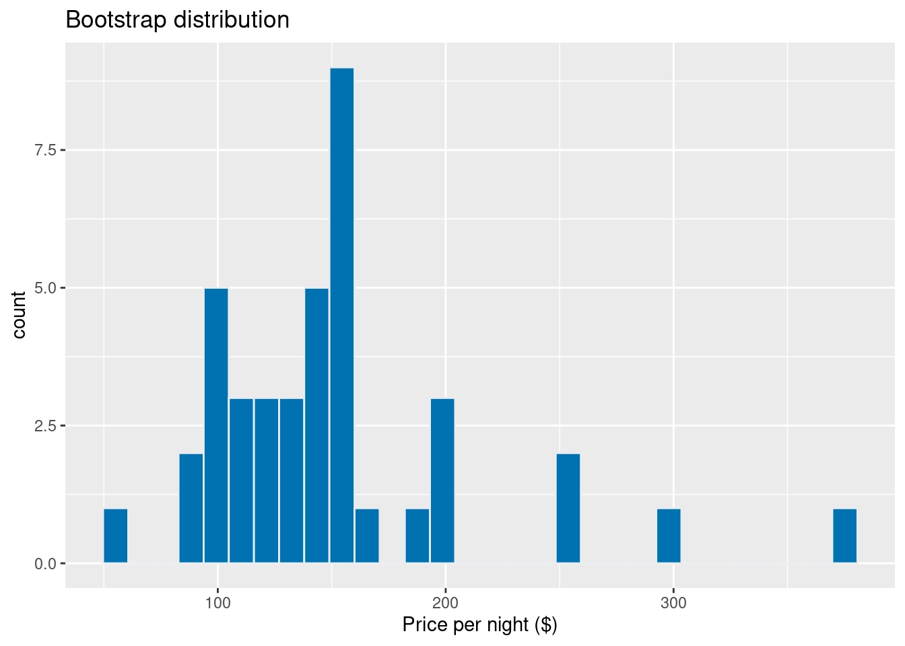

Chapter 11 Introduction to Statistical Inference
11.1 Overview
In almost all data analysis tasks in practice, we want to draw conclusions about some unknown aspect of a population of interest based on observed data sampled from that population; we typically do not get data on the full population. Data analysis questions regarding how summaries, patterns, trends, or relationships in a dataset extend to the wider population are called inferential questions. This chapter will start with the fundamental ideas of sampling from populations, and then will work towards introducing two common techniques in statistical inference: point estimation and interval estimation.
11.2 Chapter learning objectives
By the end of the chapter, students will be able to:
- Describe real-world examples of questions that can be answered with the statistical inference.
- Define common population parameters (e.g. mean, proportion, standard deviation) that are often estimated using sampled data, and estimate these from a sample.
- Define the following statistical sampling terms (population, sample, population parameter, point estimate, sampling distribution).
- Explain the difference between a population parameter and sample point estimate.
- Use R to draw random samples from a finite population.
- Use R to create a sampling distribution from a finite population.
- Describe how sample size influences the sampling distribution.
- Define bootstrapping.
- Use R to create a bootstrap distribution to approximate a sampling distribution.
- Contrast the bootstrap and sampling distributions.
11.3 Why do we need sampling?
Statistical inference can help us decide how quantities we observe in a subset of data relate to the same quantities in the broader population. Here is an example question that we might use statistical inference to answer:
What proportion of all undergraduate students in North America own an iPhone?
In the above question, we are interested in making a conclusion about all undergraduate students in North America. This is our population: in general, the population is the complete collection of individuals or cases we are interested in studying. Further, in the above question, we are interested in computing a quantity—the proportion of iPhone owners—based on the entire population. This is our population parameter: in general, a population parameter is a numerical characteristic of the entire population. In order to compute this number in the example above, we would need to ask every single undergraduate in North America whether or not they own an iPhone. In practice, directly computing population parameters is often time-consuming and costly, and sometimes impossible.
A more practical approach would be to collect measurements for a sample: a subset of individuals collected from the population. We can then compute a sample statistic—a numerical characteristic of the sample—that estimates the population parameter. For example, if we randomly selected 100 undergraduate students across North America (the sample) and computed the fraction of those students who own an iPhone (the sample statistic), we might suspect that that fraction is a reasonable estimate of the full population fraction.
Note that proportions are not the only kind of population parameter we might be interested in. Let’s consider another example question that we might tackle with statistical inference:
What is the average price-per-night of one-bedroom apartment rentals in Vancouver, Canada?
Here, the population consists of all one-bedroom apartment rental offerings in Vancouver, and the population parameter is the average price-per-night. But even within this one example, we could also be interested in many other population parameters: the median price, the fraction of one-bedroom apartments that cost more than $200 per night, the standard deviation of the price, and the list goes on. If we were somehow able to observe the whole population of one-bedroom apartments in Vancouver, we could compute each of these numbers exactly; therefore these are all population parameters. There are many kinds of observations and population parameters that you will run into in practice, but in this chapter we will focus on two settings:
- Using categorical observations to estimate the proportion of each category
- Using quantitative observations to estimate the average (or mean)
11.4 Sampling distributions
11.4.1 Sampling distributions for proportions
Let’s start with an illustrative (and tasty!) example. Timbits are bite-sized doughnuts sold at Tim Hortons, a popular Canadian-based fast-food restaurant chain founded in Hamilton, Ontario, Canada.

Timbits. Source: wikimedia.org
Suppose we wanted to estimate the true proportion of chocolate doughnuts at Tim
Hortons restaurants. Now, of course, we (the authors!) do not have access to the true population.
So in this chapter, we will simulate a synthetic box of 10,000 Timbits with two types—old-fashioned
and chocolate—as our population, and use this to illustrate
inferential concepts. Below we create a tibble() with a subject ID and Timbit type as our columns.
library(tidyverse)
library(ggplot2)
library(infer)
library(gridExtra)
set.seed(1234)
virtual_box <- tibble(timbit_id = seq(1, 10000, by = 1),
color = factor(rbinom(10000, 1, 0.63),
labels = c("old fashioned", "chocolate")))
head(virtual_box)## # A tibble: 6 x 2
## timbit_id color
## <dbl> <fct>
## 1 1 chocolate
## 2 2 chocolate
## 3 3 chocolate
## 4 4 chocolate
## 5 5 old fashioned
## 6 6 old fashionedFrom our simulated box, we can see that the proportion of chocolate Timbits is 0.63. This value, 0.63, is the population parameter. Note that this parameter value is usually unknown in real data analysis problems.
## # A tibble: 2 x 3
## color n proportion
## <fct> <int> <dbl>
## 1 old fashioned 3705 0.370
## 2 chocolate 6295 0.630Suppose we buy a box of 40 randomly-selected Timbits and count the number of chocolate Timbits,
i.e., take a random sample of size 40 from our Timbits population. The function
rep_sample_n from the infer package will allow us to sample. The arguments
of rep_sample_n are (1) the data frame to sample from, and (2) the size of the sample
to take.
samples_1 <- rep_sample_n(tbl = virtual_box, size = 40)
choc_sample_1 <- summarize(samples_1, n = sum(color == "chocolate"),
prop = sum(color == "chocolate") / 40)
choc_sample_1## # A tibble: 1 x 3
## replicate n prop
## <int> <int> <dbl>
## 1 1 20 0.5Here we see that the proportion of chocolate Timbits in this random sample is 0.5. This value is our sample statistic; since it is a single value that is used to estimate a population parameter, we refer to it as a point estimate.
Now imagine we took another random sample of 40 Timbits from the population. Do you think you would get the same proportion? Let’s try sampling from the population again and see what happens.
set.seed(2)
samples_2 <- rep_sample_n(virtual_box, size = 40)
choc_sample_2 <- summarize(samples_2, n = sum(color == "chocolate"),
prop = sum(color == "chocolate") / 40)
choc_sample_2## # A tibble: 1 x 3
## replicate n prop
## <int> <int> <dbl>
## 1 1 27 0.675Notice that we get a different value for our statistic this time. The proportion of chocolate Timbits in this sample is 0.68. If we were to do this again, another random sample could also give a different result. Statistics vary from sample to sample due to sampling variability.
But just how much should we expect the statistics of our random
samples to vary? In order to understand this, we will simulate more samples
of size 40 from our population of Timbits, and calculate the
proportion of chocolate Timbits in each sample. We can then
construct the distribution of sample proportions we calculate. The distribution
of the statistic for all possible samples of size \(n\) from a population is
called a sampling distribution. The sampling distribution will help us see
how much we would expect our sample proportions from this population to vary
for samples of size 40. Below we again use the rep_sample_n to take samples
of size 40 from our population of Timbits, but we set the reps argument
to specify the number of samples to take.
## # A tibble: 6 x 3
## # Groups: replicate [1]
## replicate timbit_id color
## <int> <dbl> <fct>
## 1 1 9054 chocolate
## 2 1 4322 old fashioned
## 3 1 1685 chocolate
## 4 1 3958 chocolate
## 5 1 2765 old fashioned
## 6 1 358 old fashioned## # A tibble: 6 x 3
## # Groups: replicate [1]
## replicate timbit_id color
## <int> <dbl> <fct>
## 1 1000 4677 chocolate
## 2 1000 3619 chocolate
## 3 1000 142 old fashioned
## 4 1000 8991 chocolate
## 5 1000 8945 chocolate
## 6 1000 7564 old fashionedNotice the column replicate is indicating the replicate with which each
Timbit belongs. Since we took 1000 samples of size 40, there are 1000 replicates.
sample_estimates <- samples %>%
group_by(replicate) %>%
summarise(sample_proportion = sum(color == "chocolate") / 40)
head(sample_estimates)## # A tibble: 6 x 2
## replicate sample_proportion
## <int> <dbl>
## 1 1 0.625
## 2 2 0.675
## 3 3 0.7
## 4 4 0.675
## 5 5 0.45
## 6 6 0.425## # A tibble: 6 x 2
## replicate sample_proportion
## <int> <dbl>
## 1 995 0.675
## 2 996 0.75
## 3 997 0.7
## 4 998 0.475
## 5 999 0.6
## 6 1000 0.375sampling_distribution <- ggplot(sample_estimates, aes(x = sample_proportion)) +
geom_histogram(fill="#0072B2", color="#e9ecef", binwidth = 0.05) +
xlab("Sample proportions")
sampling_distributionFigure 11.1: Sampling distribution of the sample proportion for sample size 40
The sampling distribution appears to be bell-shaped with one peak. It is centered around 0.6 and the sample proportions range from about 0.3 to about 0.8. In fact, we can calculate the mean and standard deviation of the sample proportions.
## # A tibble: 1 x 2
## mean sd
## <dbl> <dbl>
## 1 0.621 0.0783We notice that the sample proportions are centred around the population proportion value. The standard deviation of the sample proportions is 0.078.
Note: If random samples of size \(n\) are taken from a population, \(\hat{p}\) will be approximately Normal with mean \(p\) and standard deviation \(\sqrt{\frac{p(1-p)}{n}}\) as long as the sample size \(n\) is large enough such that \(np\) and \(n(1 - p)\) are at least 10, where \(p\) is the population proportion, \(\hat{p}\) is the sample proportion and \(n\) is the sample size.
11.4.2 Sampling distributions for means
In the previous section, our variable of interest—Timbit flavour—was categorical, and the population parameter of interest was the proportion of chocolate Timbits. What if we wanted to infer something about a population of quantitative variables instead? As mentioned in the introduction to this chapter, there are many choices of population parameter for each type of observed variable. In this section, we will study the case where we are interested in the population mean of a quantitative variable.
In particular, we will look at an example using data from Airbnb, an online marketplace for arranging or offering places to stay. The dataset contains Airbnb listings for Vancouver, Canada, in September 2020 from Inside Airbnb. Let’s imagine (for learning purposes) that our dataset represents the population of all Airbnb rental listings in Vancouver, and we are interested in the population mean price per night. Our data contains an ID number, neighbourhood, type of room, the number of people that the rental accommodates, number of bathrooms, bedrooms, beds, and the price per night.
## # A tibble: 6 x 8
## id neighbourhood room_type accommodates bathrooms bedrooms beds price
## <int> <chr> <chr> <dbl> <chr> <dbl> <dbl> <dbl>
## 1 1 Downtown Entire ho… 5 2 baths 2 2 150
## 2 2 Downtown Eastside Entire ho… 4 2 baths 2 2 132
## 3 3 West End Entire ho… 2 1 bath 1 1 85
## 4 4 Kensington-Cedar… Entire ho… 2 1 bath 1 0 146
## 5 5 Kensington-Cedar… Entire ho… 4 1 bath 1 2 110
## 6 6 Hastings-Sunrise Entire ho… 4 1 bath 2 3 195We can visualize the population distribution of the price per night with a histogram.
population_distribution <- ggplot(airbnb, aes(x = price)) +
geom_histogram(fill="#0072B2", color="#e9ecef") +
xlab("Price per night ($)")
population_distributionFigure 11.2: Population distribution of price per night ($) for all Airbnb listings in Vancouver, Canada
population_parameters <- airbnb %>%
summarize(pop_mean = mean(price),
pop_sd = sd(price))
population_parameters## # A tibble: 1 x 2
## pop_mean pop_sd
## <dbl> <dbl>
## 1 155. 116.We see that the distribution has one peak and is skewed—most of the listings are less than $250 per night, but a small proportion of listings cost more than that, creating a long tail on the histogram’s right side. The population mean is $154.51 and the population standard deviation is $115.79.
Suppose we take a sample of 20 observations from our population. Below we create a histogram to visualize the distribution of observations in the sample, and calculate the mean and standard deviation of our sample. These two numbers are point estimates for the mean and standard deviation of the full population.
## # A tibble: 6 x 9
## # Groups: replicate [1]
## replicate id neighbourhood room_type accommodates bathrooms bedrooms beds
## <int> <int> <chr> <chr> <dbl> <chr> <dbl> <dbl>
## 1 1 401 Kitsilano Private … 2 2 baths 2 2
## 2 1 3187 South Cambie Private … 4 1 privat… 1 2
## 3 1 2127 Sunset Entire h… 8 2 baths 3 4
## 4 1 3203 Downtown Entire h… 4 1 bath 1 0
## 5 1 455 Kitsilano Entire h… 6 2 baths 3 3
## 6 1 3116 Marpole Entire h… 2 1 bath 1 1
## # … with 1 more variable: price <dbl>sample_distribution <- ggplot(sample_1, aes(price)) +
geom_histogram(fill="#0072B2", color="#e9ecef") +
xlab("Price per night ($)")
sample_distributionFigure 11.3: Distribution of price per night ($) for sample of 20 Airbnb listings
## # A tibble: 1 x 3
## replicate sample_mean sample_sd
## <int> <dbl> <dbl>
## 1 1 168. 117.Recall that the population mean was $154.51 and the population standard deviation was $115.79. We see that our point estimates for the mean and standard deviation are $167.93 and $116.96, respectively. So our estimates were actually quite close to the population parameters: the mean was about 8.7% off, while the standard deviation was about 1% off. Note that in practice, we usually cannot compute the accuracy of the estimate, since we do not have access to the population parameter; if we did, we wouldn’t need to estimate it!
Also recall from the previous section that the point estimate can vary; if we took another random sample from the population, then the value of our statistic may change. So then did we just get lucky with our point estimate above? How much does our estimate vary across different samples of size 20 in this example? Again, since we have access to the population, we can take many samples and plot the sampling distribution of the point estimates to get a sense for this variation. In this case, we’ll use 1500 samples of size 20.
## # A tibble: 6 x 9
## # Groups: replicate [1]
## replicate id neighbourhood room_type accommodates bathrooms bedrooms beds
## <int> <int> <chr> <chr> <dbl> <chr> <dbl> <dbl>
## 1 1 3750 Hastings-Sun… Entire h… 4 1 bath 2 2
## 2 1 3254 Hastings-Sun… Entire h… 2 1 bath 1 1
## 3 1 2318 Mount Pleasa… Entire h… 4 1.5 baths 2 2
## 4 1 3940 West Point G… Private … 1 1 shared… 1 1
## 5 1 4331 West End Entire h… 4 1 bath 1 1
## 6 1 159 Mount Pleasa… Entire h… 5 2.5 baths 3 3
## # … with 1 more variable: price <dbl>sample_estimates <- samples %>%
group_by(replicate) %>%
summarise(sample_mean = mean(price))
head(sample_estimates)## # A tibble: 6 x 2
## replicate sample_mean
## <int> <dbl>
## 1 1 164.
## 2 2 201.
## 3 3 185
## 4 4 190.
## 5 5 156.
## 6 6 158.sampling_distribution_20 <- ggplot(sample_estimates, aes(x = sample_mean)) +
geom_histogram(fill="#0072B2", color="#e9ecef") +
xlab("Sample mean price per night ($)")
sampling_distribution_20Figure 11.4: Sampling distribution of the sample means for sample size of 20
Here we see that the sampling distribution of the mean has one peak and is bell-shaped. Most of the estimates are between about $140 and $170; but there are a good fraction of cases outside this range (i.e., where the point estimate was not close to the population parameter). So it does indeed look like we were quite lucky when we estimated the population mean with only 8.7% error. Let’s visualize the population distribution, distribution of the sample, and the sampling distribution on one plot to compare them.
Figure 11.5: Comparision of population distribution, sample distribution and sampling distribution
Given that there is quite a bit of variation in the sampling distribution of the sample mean—i.e., the point estimate that we obtain is not very reliable—is there any way to improve the estimate? One way to improve a point estimate is to take a larger sample. To illustrate what effect this has, we will take 1500 samples of size 20, 50, 100, and 500, and plot the sampling distribution of the sample mean below.
Figure 11.6: Comparision of sampling distributions
Based on the visualization, two points about the sample mean become clear. First, the mean of the sample mean (across samples) is equal to the population mean. Second, increasing the size of the sample decreases the standard deviation (i.e., the variability) in the sample mean point estimate of the population mean. Therefore, a larger sample size results in a more reliable point estimate of the population parameter.
Note: If random samples of size \(n\) are taken from a population, the sample mean \(\bar{x}\) will be approximately Normal with mean \(\mu\) and standard deviation \(\frac{\sigma}{\sqrt{n}}\) as long as the sample size \(n\) is large enough. \(\mu\) is the population mean, \(\sigma\) is the population standard deviation, \(\bar{x}\) is the sample mean, and \(n\) is the sample size. If samples are selected from a finite population as we are doing in this chapter, we should apply a finite population correction. We multiply \(\frac{\sigma}{\sqrt{n}}\) by \(\sqrt{\frac{N - n}{N - 1}}\) where \(N\) is the population size and \(n\) is the sample size. If our sample size, \(n\), is small relative to the population size, this finite correction factor is less important.
11.4.3 Summary
- A statistic is a value computed using a sample from a population; a point estimate is a statistic that is a single value (e.g. a mean or proportion)
- The sampling distribution of a statistic is the distribution of the statistic for all possible samples of a fixed size from the same population.
- The sample means and proportions calculated from samples are centered around the population mean and proportion, respectively.
- The spread of the sampling distribution is related to the sample size. As the sample size increases, the spread of the sampling distribution decreases.
- The shape of the sampling distribution is usually bell-shaped with one peak and centred at the population mean or proportion.
11.5 Bootstrapping
11.5.1 Overview
We saw in the previous section that we could compute a point estimate of a population parameter using a sample of observations from the population. And since we had access to the population, we could evaluate how accurate the estimate was, and even get a sense for how much the estimate would vary for different samples from the population. But in real data analysis settings, we usually have just one sample from our population, and do not have access to the population itself. So how do we get a sense for how variable our point estimate is when we only have one sample to work with? In this section, we will discuss interval estimation and construct confidence intervals using just a single sample from a population.
Here is the key idea. First, if you take a big enough sample, it looks like the population.
[TODO: visualize increasing sample size means sample looks like pop]
In the previous section, we took many samples of the same size from our population to get a sense for the variability of a sample statistic. But if our sample is big enough that it looks like our population, we can pretend that our sample is the population, and take more samples (with replacement) of the same size from it instead! This very clever technique is called the bootstrap. Note that by taking many samples from our single, observed sample, we do not obtain the true sampling distribution, but rather an approximation that we call the bootstrap distribution.
Note that we need to sample with replacement when using the bootstrap. Otherwise, if we had a sample of size \(n\), and obtained a sample from it of size \(n\) without replacement, it would just return our original sample.
This section will explore how to create a bootstrap distribution from a single sample using R. For a sample of size \(n\), the process we will go through is as follows:
- Randomly select an observation from the original sample, which was drawn from the population
- Record the observation’s value
- Replace that observation
- Repeat steps 1 - 3 (sampling with replacement) until you have \(n\) observations, which form a bootstrap sample
- Calculate the bootstrap point estimate (e.g., mean, median, proportion, slope, etc.) of the \(n\) observations in your bootstrap sample
- Repeat steps (1) - (5) many times to create a distribution of point estimates (the bootstrap distribution)
- Calculate the plausible range of values around our observed point estimate
11.5.2 Bootstrapping in R
Let’s continue working with our Airbnb data. Once again, let’s say we are interested in estimating the population mean price per night of all Airbnb listings in Vancouver, Canada. We will draw a single sample of size 40 from the population and visualize the distribution of the sample:
one_sample <- airbnb %>%
rep_sample_n(40) %>%
ungroup() %>% # ungroup the data frame
select(price) # drop the replicate column
head(one_sample)## # A tibble: 6 x 1
## price
## <dbl>
## 1 300
## 2 168
## 3 140
## 4 199
## 5 60
## 6 450one_sample_dist <- ggplot(one_sample, aes(price)) +
geom_histogram(fill="#0072B2", color="#e9ecef") +
xlab("Price per night ($)")
one_sample_distFigure 11.7: Histogram of price per night ($) for one sample of size 20
## # A tibble: 1 x 1
## sample_mean
## <dbl>
## 1 162.The sample distribution is skewed with a few observations out to the right. The mean of the sample is $161.5. Remember, in practice, we usually only have one sample from the population. So this sample and estimate are the only data we can work with.
We now perform steps 1 - 5 listed above to generate a single bootstrap sample in R using the
sample we just took, and calculate the bootstrap estimate for that sample. We
will use the rep_sample_n function as we did when we were creating our
sampling distribution. Since we want to sample with replacement, we change the
argument for replace from its default value of FALSE to TRUE.
## # A tibble: 6 x 2
## # Groups: replicate [1]
## replicate price
## <int> <dbl>
## 1 1 150
## 2 1 188
## 3 1 380
## 4 1 168
## 5 1 150
## 6 1 85boot1_dist <- ggplot(boot1, aes(price)) +
geom_histogram(fill="#0072B2", color="#e9ecef") +
xlab("Price per night ($)") +
ggtitle("Bootstrap distribution")
boot1_dist
## # A tibble: 1 x 2
## replicate mean
## <int> <dbl>
## 1 1 151Notice that our bootstrap distribution has a similar shape to the original sample distribution. Though the shapes of the distributions are similar, they are not identical. You’ll also notice that the original sample mean and the bootstrap sample mean differ. How might that happen? Remember that we are sampling with replacement from the original sample, so we don’t end up with the same sample values again. We are trying to mimic drawing another sample from the population without actually having to do that.
Let’s now take 1500 bootstrap samples from the original sample we drew from the
population (one_sample) using rep_sample_n and calculate the means for
each of those replicates. Recall that this assumes that one_sample looks like
our original population; but since we do not have access to the population itself,
this is often the best we can do.
## # A tibble: 6 x 2
## # Groups: replicate [1]
## replicate price
## <int> <dbl>
## 1 1 125
## 2 1 188
## 3 1 112
## 4 1 95
## 5 1 140
## 6 1 79## # A tibble: 6 x 2
## # Groups: replicate [1]
## replicate price
## <int> <dbl>
## 1 1500 150
## 2 1500 60
## 3 1500 100
## 4 1500 112
## 5 1500 111
## 6 1500 99boot1500_means <- boot1500 %>%
group_by(replicate) %>%
summarize(mean = mean(price))
head(boot1500_means)## # A tibble: 6 x 2
## replicate mean
## <int> <dbl>
## 1 1 146.
## 2 2 144.
## 3 3 155.
## 4 4 158.
## 5 5 149.
## 6 6 174.## # A tibble: 6 x 2
## replicate mean
## <int> <dbl>
## 1 1495 171.
## 2 1496 161.
## 3 1497 162
## 4 1498 164.
## 5 1499 139.
## 6 1500 161.We now calculate point estimates for each bootstrap sample and generate a bootstrap distribution of our point estimates. The bootstrap distribution suggests how we might expect our point estimate to behave if we took another sample.
boot_est_dist <- ggplot(boot1500_means, aes(x = mean)) +
geom_histogram(fill="#0072B2", color="#e9ecef") +
xlab("Sample mean price per night ($)") Let’s compare our bootstrap distribution with the true sampling distribution (taking many samples from the population).
Figure 11.8: Comparison of distribution of the bootstrap sample means and sampling distribution
There are two important points that we can take away from these plots. First, we see how the sampling distribution is centred at $154.51, the population mean value, as we learned in the previous section. However, the bootstrap distribution is centred at $161.56, which is the original sample’s mean price per night. This is because we are resampling from the original sample over and over again, so we see that the bootstrap distribution is centred at the original sample’s mean value. The second important point is that the shape and spread of the true sampling distribution and the bootstrap distribution is similar; the bootstrap distribution lets us get a sense for the variability of the point estimate.
Figure 11.9: Summary of bootstrapping process
11.5.3 Using the bootstrap to calculate a plausible range
Now that we have constructed our bootstrap distribution let’s use it to create a confidence interval for the mean, a range of plausible values for the population mean. Confidence intervals can be set at different levels. Common levels are 90%, 95% and 99%. There is a balance between your level of confidence and an interval’s precision, so the confidence level you choose will depend on the application. Suppose we want to construct a 95% confidence interval using the bootstrap distribution we found earlier.
To calculate a 95% confidence interval using bootstrapping:
- Arrange the observations in the bootstrap distribution in ascending order
- Find the value such that 2.5% of observations fall below it (the 2.5% percentile). Use that value as the lower bound of the interval
- Find the value such that 97.5% of observations fall below it (the 97.5% percentile). Use that value as the upper bound of the interval
To do this in R, we can use the quantile() function:
## 2.5% 97.5%
## 136.3356 189.6656We’re 95% “confident” that the true population mean price per night of Airbnb listings in Vancouver is between $136.34 and $189.67. Suppose we repeated this process of sampling and constructing confidence intervals more times with more samples. We’d expect 95% of intervals would contain the true population parameter.
Figure 11.10: Distribution of the bootstrap sample means with 95% confidence interval lower and upper bounds
Here we notice that our 95% confidence interval does indeed contain the true population mean value, $154.51! However, in practice, we would not know whether our interval captured the true population parameter or not because we usually only have a single sample, not the entire population.
11.6 Additional readings
For more about statistical inference and bootstrapping, refer to pages 187-190
of Introduction to Statistical Learning with Applications in R by
Gareth James, Daniela Witten, Trevor Hastie and Robert Tibshirani, and Chapters 7 - 8 of Modern Dive Statistical
Inference via Data Science by Chester Ismay and Albert Y. Kim.